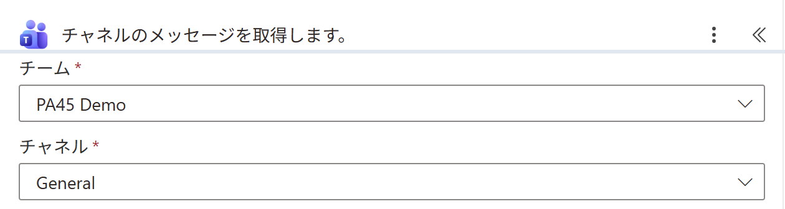
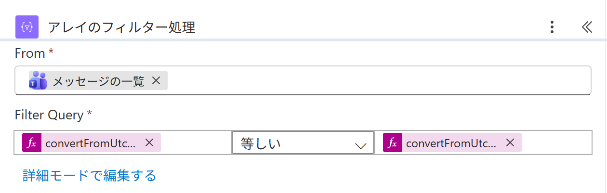

Vol.152-4
要の設定は今日に絞る条件

投稿の作成日時は UTC なので、左右とも 日本時間の yyyy-MM-dd にしてから比べます。
片方だけ直すと、朝9時前の投稿が前の日に入ってしまいます
片方だけ直すと、朝9時前の投稿が前の日に入ってしまいます

A
A
チームとチャネルは一覧から選ぶだけ
A
取ってくるのはチャネルの投稿。返信は入らない

B
C
B
From は取得の出力 メッセージの一覧
C
左
convertFromUtc(item()?['createdDateTime'],'Tokyo Standard Time','yyyy-MM-dd') 等しい 右は utcNow() で同じ形宛先をチームの共有アドレスにすると、休みの人の引き継ぎにも使える
出典：Microsoft Learn